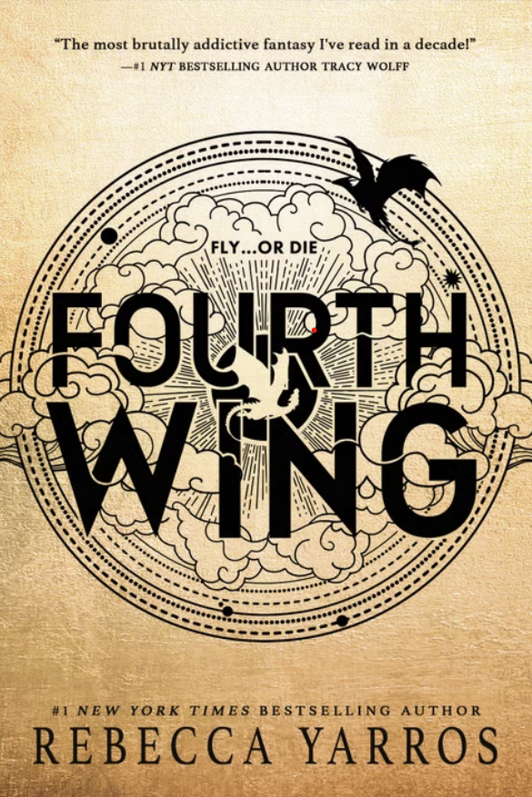
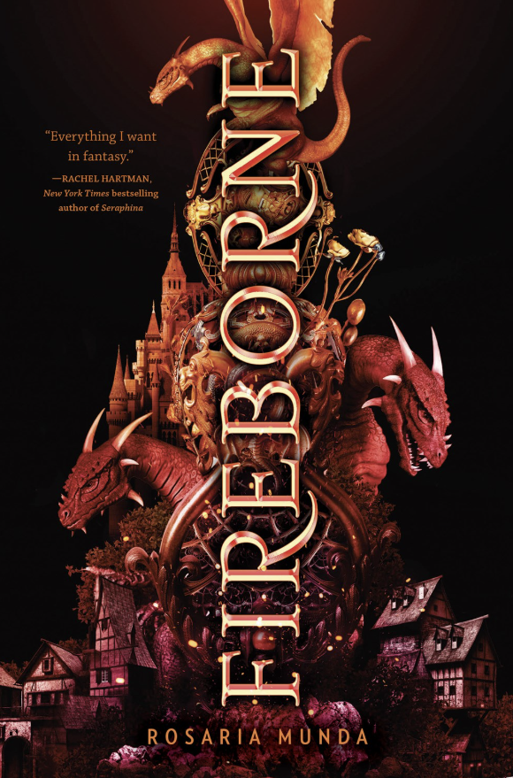
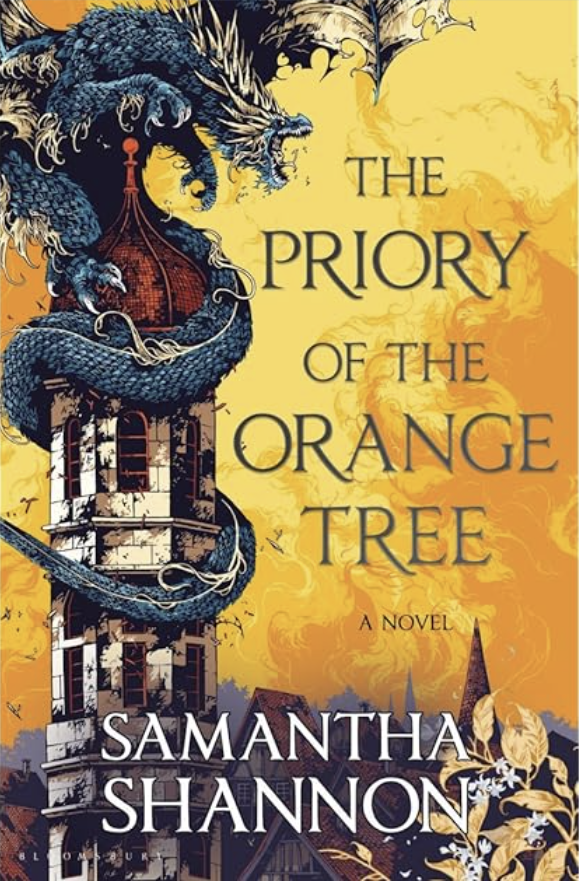
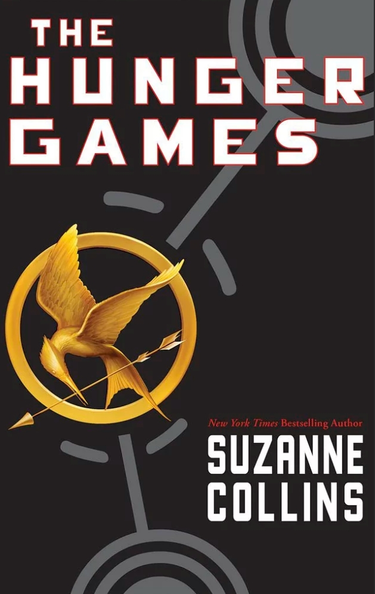
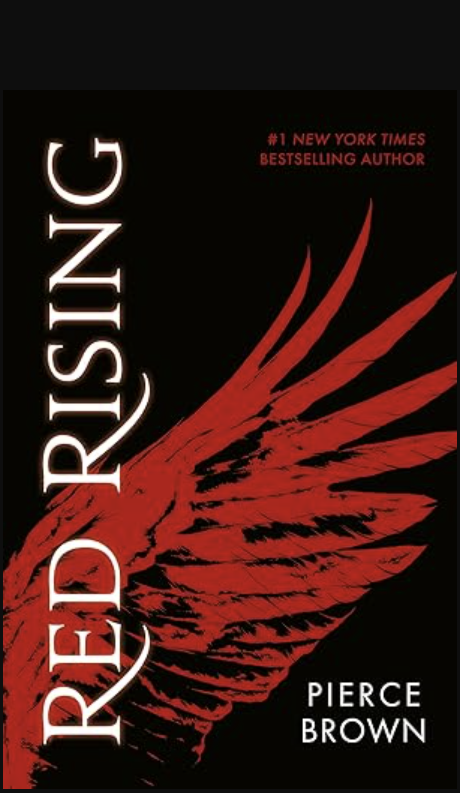
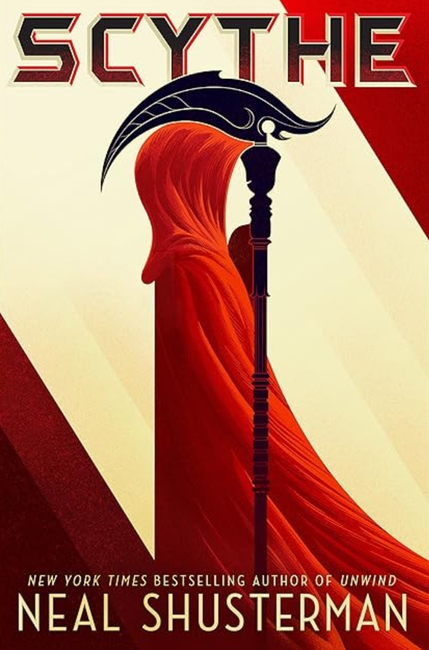
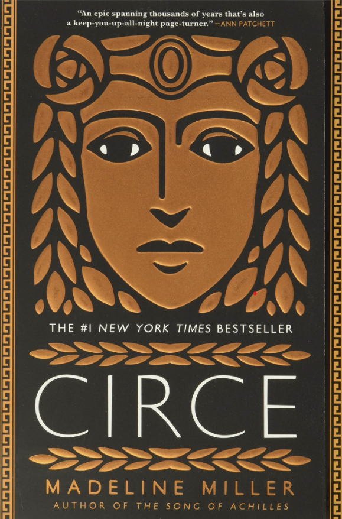
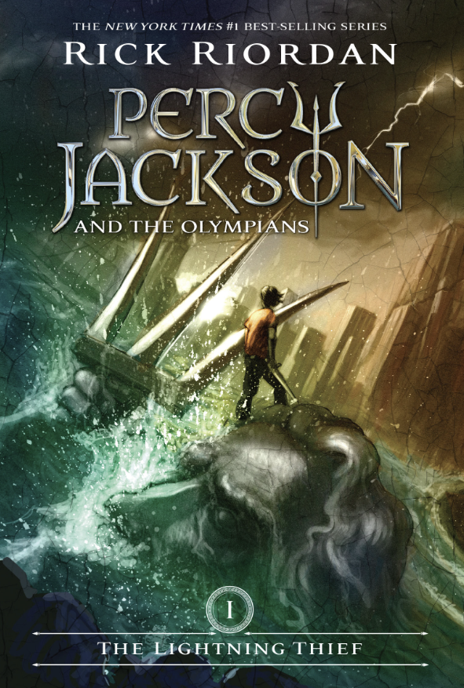
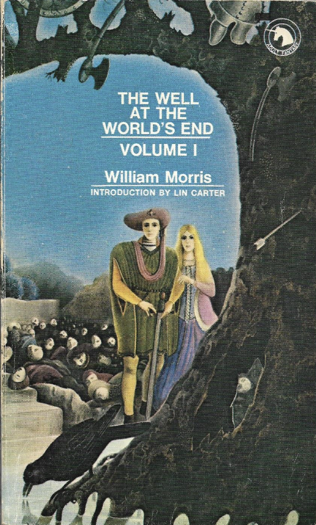

Step Into Another World: Fantasy
If you have ever opened a book hoping to find a map printed on the very first page, you are in the right place. The fantasy genre is the ultimate form of escapism, allowing us to leave the mundane rules of our own reality behind and step into worlds where absolutely anything is possible. It is a genre defined by imagination, magic, and boundless creativity.
But fantasy is about much more than just dragons and wizards. At its core, the best fantasy uses its magical settings to explore very real human truths. These stories tackle epic themes of good versus evil, the corrupting nature of power, and the incredible resilience of the human spirit. Watching characters navigate impossible odds in extraordinary settings often teaches us a lot about how to handle the challenges in our own lives.
Because the scope of fantasy is literally limited only by an author's imagination, it contains a massive variety of stories. To help you find exactly the kind of adventure you are looking for, I have highlighted three of my absolute favorite subgenres below. Grab your sword, and let's go on a quest!
High Fantasy
When most people think of the fantasy genre, High Fantasy is exactly what comes to mind. These stories are set in completely fictional, secondary worlds that have their own unique geographies, histories, cultures, and rules of magic. The stakes are almost always world-ending, and the journey usually involves a sprawling, epic quest.
The true joy of High Fantasy lies in the world-building. Authors in this space spend years crafting intricate magic systems, inventing entire languages, and plotting complex political structures. If you love deep lore, massive casts of characters, and a slow, immersive burn that ultimately leads to epic, earth-shattering battles, this is the subgenre for you.

Fourth Wing
Violet Sorrengail was supposed to live a quiet life among books, but she’s just been forced into the brutal, cutthroat world of dragon riders at Basgiath War College. If you love high-stakes action, fierce rivalries, and a romance that will keep you on the edge of your seat, this massive hit is an absolute must-read.
Get the Book
Fireborne
Orphaned by a brutal revolution, two teens from completely opposite backgrounds must compete to join the new regime's elite dragon-riding fleet. This story dives deep into complex political themes of class, trauma, and loyalty, all wrapped up in a gripping fantasy school setting. If you want dragons paired with incredible character development and high-stakes moral dilemmas, this is a must-read.
Get the Book
The Priory of the Orange Tree
If you loved the political scheming, dragon lore, and looming mythical threats of Westeros, this is your next obsession. It follows queens, mages, and dragon riders from a divided world who must unite to defeat a rising ancient evil—and the best part? It wraps up all that epic world-building into a single, incredibly satisfying standalone novel.
Get the BookDystopian Fantasy
Dystopian Fantasy takes us to dark, often terrifying futures or alternate realities where society has completely broken down or been restructured under oppressive, authoritarian rule. These stories blend fantastical elements with bleak societal structures, creating high-stakes environments where simply surviving is an act of defiance.
What makes this subgenre so wildly addictive is the spark of rebellion. You get to watch ordinary characters slowly realize the horrifying truths of the world they live in, find the courage to stand up against impossible odds, and ignite revolutions that tear corrupt systems to the ground. They are fast-paced, action-packed, and emotionally gripping from start to finish.

The Hunger Games
This is the modern classic that completely redefined dystopian fiction for a generation. When Katniss Everdeen volunteers for a televised fight to the death to save her younger sister, she inadvertently sparks a revolution in the ruins of North America. It is incredibly fast-paced and still holds up as a brilliant, gripping read.
Get the Book
Red Rising
Set in a rigidly color-coded society living on Mars, this series is absolutely relentless. When a low-born miner suffers a devastating loss, he decides to undergo agonizing modifications to infiltrate the elite ruling class and tear their society down from the inside. It’s brutal, brilliant, and impossible to put down.
Get the Book
Scythe
Imagine a perfect future where humanity has conquered disease, war, and even death itself. To keep the population under control, a designated group of people called "Scythes" are the only ones permitted to end lives. It tackles similar themes of morality and societal structure as Divergent, but with a wildly unique and chilling premise.
Get the BookMythic Fantasy
Mythic Fantasy weaves ancient mythology, folklore, and fairytales into fresh, compelling new narratives. Whether an author is retelling a classic Greek myth from a forgotten perspective or bringing ancient gods down into the modern world, this subgenre relies on stories that have been deeply ingrained in human history for centuries.
These books are incredibly satisfying because they offer a sense of familiarity mixed with thrilling reinvention. They give a voice to the monsters, humanize the untouchable gods, and explore the tragic, beautiful poetry of ancient legends. If you love stories steeped in fate, tragic romance, and larger-than-life divine drama, you will devour these.

Circe
This is a bold, deeply mesmerizing retelling of the infamous witch from Homer's Odyssey. It completely transforms a historically misunderstood figure into a fiercely complex, powerful protagonist who rubs shoulders with legendary gods and monsters. It's character-driven, beautifully written, and perfect if you want a slower, more thoughtful fantasy.
Get the Book
Percy Jackson and the Olympians
You can't talk about mythic fantasy without bringing up this absolute staple! When a troubled kid discovers he's actually the son of Poseidon, he gets swept away to a hidden summer camp for demigods and embarks on an epic, cross-country quest. It is hilarious, incredibly fast-paced, and seamlessly blends ancient Greek mythology with the modern world in a way that is just pure fun.
Get the Book
The Well at the World's End
If you love the sprawling, old-world feel of Tolkien's Middle-earth, you have to read the classic that actually inspired it! Following a young prince who sets out on an epic quest to find a legendary magical well, this foundational text practically invented the modern fantasy adventure. It feels just like reading an ancient, beautifully crafted fairy tale.
Get the Book